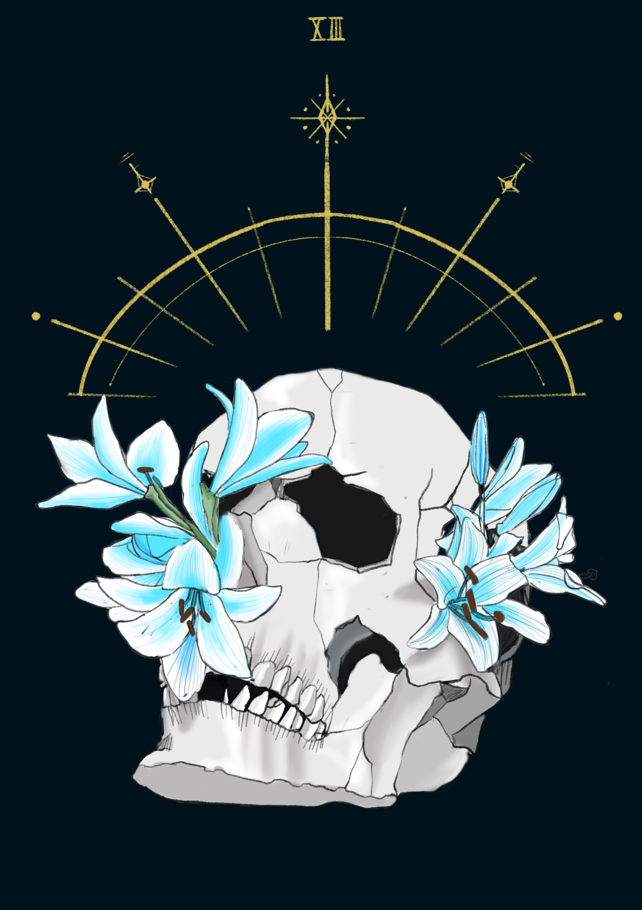

Death
영원과 생명 사이클의 최종적 마침, 종국, 완전한 상실, 우울함, 슬픔, 새로운 성장
우리가 변화하면 새로운 태도와 새로운 환경을 맞게 되고 구식은 죽고 그 본래의 형태로 돌아갈 수 없다.
이렇듯 하데스는 우리가 체험하는 모든 종국을 상징한다.
그가 입고 있는 검은 옷은 새로운 주기를 맞기 위해 필요한 슬픔을 상징한다.
죽음 카드가 반드시 나쁜 종말을 상징하는 것은 아니다.
최종적인 종국은 결혼이나 출산과 같은 기쁜 사건들을 낳기도 한다.
말하자면 새로운 시작을 뜻할 뿐만 아니라, 낡은 삶의 방식이 죽었음을 의미하는 것이기도 하다.
우리는 그러한 이별은 인정하고 애도해야 한다.
죽음 카드는 육체적인 죽음에 대한 묘사라기보다는 오히려 피할 수 없는 인생의 사이클을 의미한다.